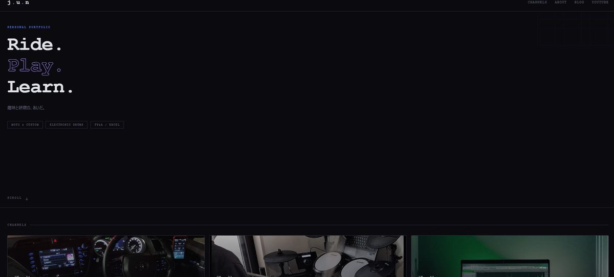
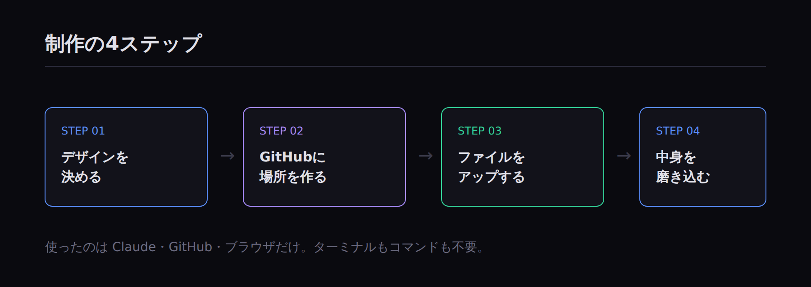
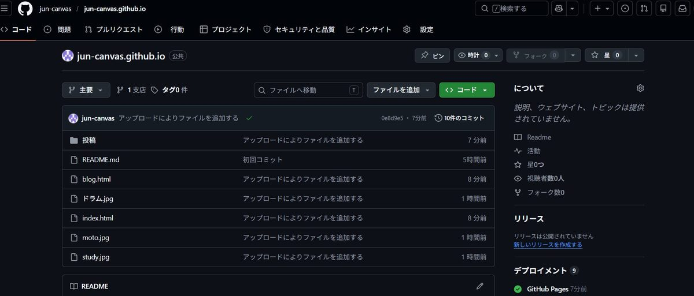
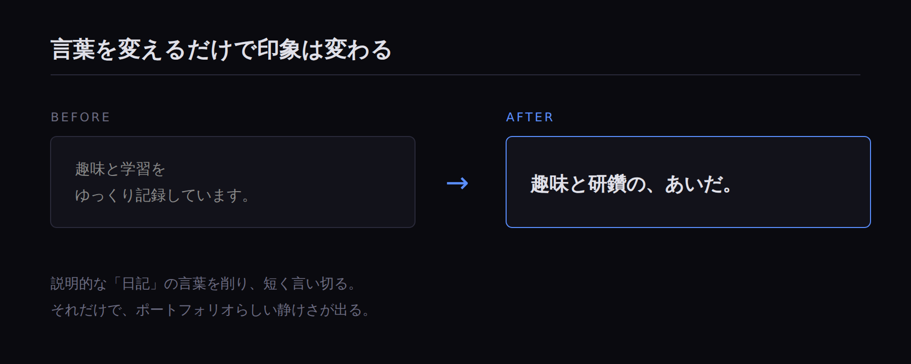

AIと一緒にホームページを
ゼロから作った全記録
はじめに
プログラミングの知識がほとんどない私が、AI（Claude）と対話しながら、自分のポートフォリオサイトをゼロから作り、無料で公開するまでの記録です。
特別なソフトは使っていません。使ったのは、Claudeとのチャット、GitHub（無料）、ブラウザだけ。費用もゼロ円です。
同じように「ホームページを作ってみたいけど、何から手をつければいいか分からない」という方の参考になればと思います。

完成したトップページ
使ったもの
- Claude（対話AI）：デザインの相談、HTMLコードの生成、文章作成
- GitHub Pages（無料）：サイトを公開する場所
- ブラウザ：すべての作業をここで完結
ターミナル（黒い画面）やコマンド入力は一切使っていません。すべてクリックとコピペで完結します。
全体の流れ
作業は大きく4つのステップに分かれました。
- デザインと構成をAIと決める
- GitHubに公開の場所を用意する
- AIが作ったファイルをアップロードする
- 中身を磨き込む（画像・文章）
順番に説明していきます。
ステップ1：デザインと構成を決める
まずClaudeに「3つのYouTubeチャンネルをまとめたポートフォリオサイトを作りたい」と伝えました。
このとき大事だったのは、自分の希望を具体的に伝えることです。私の場合は次の3点を決めました。
- サイト名（仮で
j.u.n） - デザインの方向性（ダーク・クールな雰囲気）
- 載せたい内容（3つのチャンネルへのリンク）
これを伝えると、Claudeがその場で動くプロトタイプを見せてくれました。実際の見た目を確認しながら進められるので、イメージのズレがありません。

制作の全体フロー
ステップ2：GitHubに公開の場所を用意する
ここが初心者にとって最初の関門でした。GitHubは、作ったファイルを置いて公開できる無料サービスです。
手順としては、
- GitHubアカウントを作る（すでに持っていました）
- 「リポジトリ」という入れ物を作る
- 公開設定をオンにする
リポジトリの名前は ユーザー名.github.io という形にする必要があります。これがそのまま公開URLになります。
ここでいくつかつまずきましたが、その詳細は別記事にまとめました（GitHub初心者がつまずいた5つのポイント）。
ステップ3：ファイルをアップロードする
Claudeが作ってくれた index.html というファイルを、GitHubの画面にドラッグ＆ドロップでアップロードしました。
「コミット」というボタンを押すと保存され、数分後には
https://（自分のID）.github.ioというURLで、世界中からアクセスできるサイトが公開されました。この瞬間は本当に感動しました。

GitHubにファイルをアップした状態
ステップ4：中身を磨き込む
公開できた最初のバージョンは、正直まだ地味でした。そこからClaudeと相談しながら、少しずつ磨いていきました。
やったこと
- カードの背景に自分で撮った写真（愛車、ドラム）を入れた
- 一部はAIで画像を生成して使った
- アイコンを絵文字から線画に変えた
- 説明文を「日記っぽい言葉」から「ポートフォリオらしい言葉」に書き換えた
例えば最初は「趣味と学習をゆっくり記録しています」という説明文でしたが、これを「趣味と研鑽の、あいだ。」というシンプルな言葉に変えるだけで、ぐっと洗練されました。

説明文のビフォーアフター
やってみて分かったこと
AIは「それっぽい答え」を自信満々に出す。でも、最初に自分の条件を伝えることが大事。
実は作業の途中で、Claudeの提案が二転三転した場面がありました。「このツールがおすすめ」と言った直後に「やっぱり別の方が良い」と変わったり。
でも、自分の状況（初心者である、間違えたくない、記録に残したい）をしっかり伝えると、ちゃんと一番シンプルな方法に落ち着きました。
完璧を目指さず、まず公開してしまうことも大事でした。地味な状態でも一度公開してしまえば、あとはいくらでも直せます。
おわりに
費用ゼロ、専門知識ほぼゼロでも、AIの力を借りればこれだけのサイトが作れました。所要時間は、つまずいた時間も含めて半日ほどです。
このサイト自体が、その記録です。